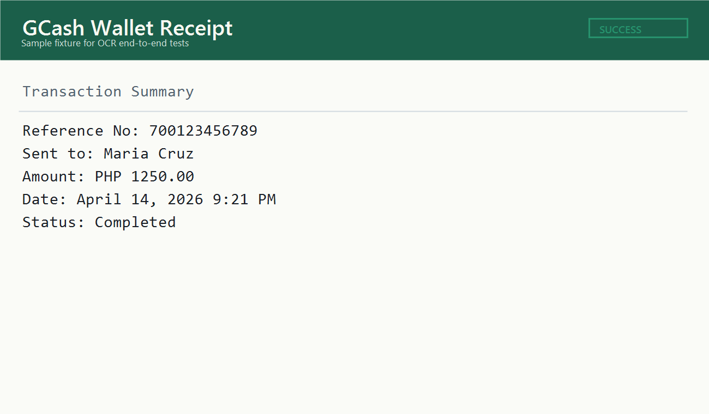

extractText()
Runs OCR, normalizes spacing, returns confidence metrics, and optionally parses the result.
Version 0.2.1
Viscera wraps tesseract.js with parser presets, richer OCR metadata,
offline-friendly options, and a lighter path to custom document extraction.
Quickstart
If you only want OCR, use extractText(). If you already have text,
use parseText() and let Viscera suggest the right preset.
const { extractText } = require("viscera");
async function main() {
const result = await extractText("./receipt.png", {
preset: "mobile_receipt",
logger(message) {
if (message.status === "recognizing text") {
console.log(`OCR ${Math.round(message.progress * 100)}%`);
}
},
});
console.log(result.text);
console.log(result.parsed);
}
main().catch(console.error);extractText()Runs OCR, normalizes spacing, returns confidence metrics, and optionally parses the result.
parseText()Useful when OCR already happened elsewhere and you only want structured output.
createExtractor()Save shared defaults for apps that process the same document family over and over.
registerPreset()Turn product-specific text formats into reusable JSON parsers.
Presets
The built-in presets are intentionally practical. They get you moving for common uploads, then you can graduate to your own parser once your app knows its document shapes better.
const { parseText } = require("viscera");
const result = parseText(`
BDO Online Banking
Transaction Reference: ABC-12345
Sender: John Doe
Receiver: Jane Santos
Amount: PHP 2500.75
`);
console.log(result.preset);
console.log(result.suggestedPresets);
console.log(result.parsed);Fixture Gallery
These sample images live in the repository and are used for end-to-end OCR coverage. They also make the docs page feel less theoretical, which is always a nice quality-of-life win.

{
"category": "mobile_receipt",
"platform": "gcash",
"amountValue": 1250,
"currency": "PHP",
"reference": "700123456789",
"receiver": "Maria Cruz"
}Offline OCR
The repo includes eng.traineddata, and the fixture tests use local OCR settings so
the suite does not depend on a network fetch.
const path = require("node:path");
const { extractText } = require("viscera");
const repoRoot = process.cwd();
const result = await extractText("./docs/assets/fixtures/mobile-receipt.png", {
preset: "mobile_receipt",
langPath: repoRoot,
gzip: false,
cacheMethod: "none",
});Publish Prep
This repo is now much closer to a real npm release. The package metadata is filled in, the changelog exists, and the publish path checks the package contents before release.
0.2.1CHANGELOG.md added for release notesnpm test and npm run pack:preview used to validate the releaseconst { registerPreset, parseText } = require("viscera");
registerPreset("membership_card", {
description: "Extract a member id and holder name",
keywords: ["member id", "membership"],
score(text) {
return /member id/i.test(text) ? 100 : 0;
},
parse(text) {
return {
category: "membership_card",
memberId: text.match(/Member ID:\s*([A-Z0-9-]+)/i)?.[1] || null,
name: text.match(/Name:\s*(.+)/i)?.[1] || null,
};
},
});
console.log(parseText("Member ID: MEM-2044\nName: Mika Tenshio", {
preset: "membership_card",
}));